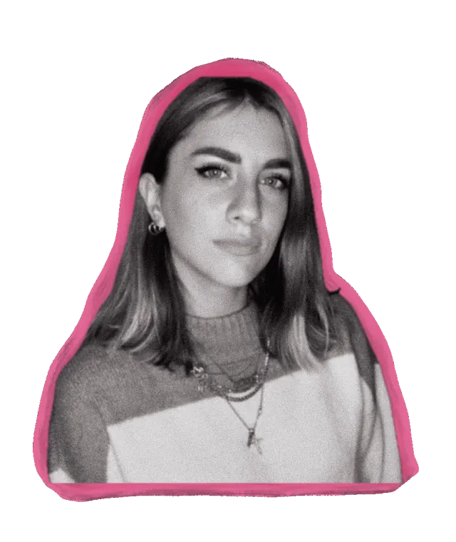

SimonaMenditto.
Progetto funnel, email e customer journey che portano risultati misurabili. E ci tengo che siano anche belli da vedere.

Data
meets
aesthetic.
Lavoro nel customer marketing: funnel, email automation, CRM e lead generation. Parto dai dati, perché mi dicono dove si perde l’utente e cosa vale la pena testare.
Allo stesso tempo ho una forte sensibilità estetica. In un’altra vita sarei stata una graphic designer, e quella parte di me non l’ho mai spenta: la porto nei progetti e nei brand che disegno nel tempo libero.
Il mio sogno? Lavorare a una di quelle campagne che fanno pensare: “Avrei voluto pensarci io.”
Strumenti e competenze
Brand
lab.
Brief fittizi che mi do per allenare l’occhio: identità complete, dal moodboard al mockup. Passa sopra una card per vedere un’altra tavola, clicca per aprire tutto il progetto.
Experience
& education.
Lavoro
Formazione
Let’s
work
together.
Mi piace parlare di nuovi progetti, collaborazioni o semplicemente di marketing e brand design. Cerco contesti dove creatività e approccio data-driven contano allo stesso modo.
- LinkedInsimona-menditto ↗
- Edicola RiVista@edicolarivista ↗
- BaseRoma, Italia